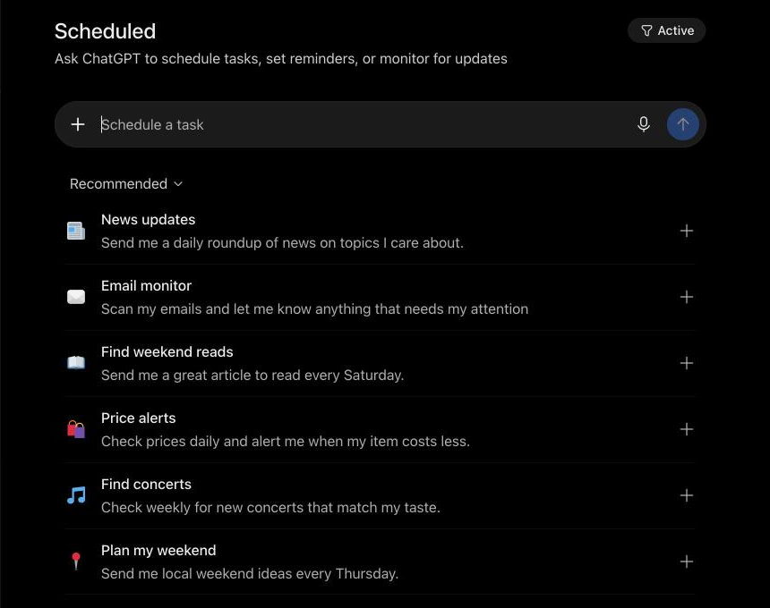
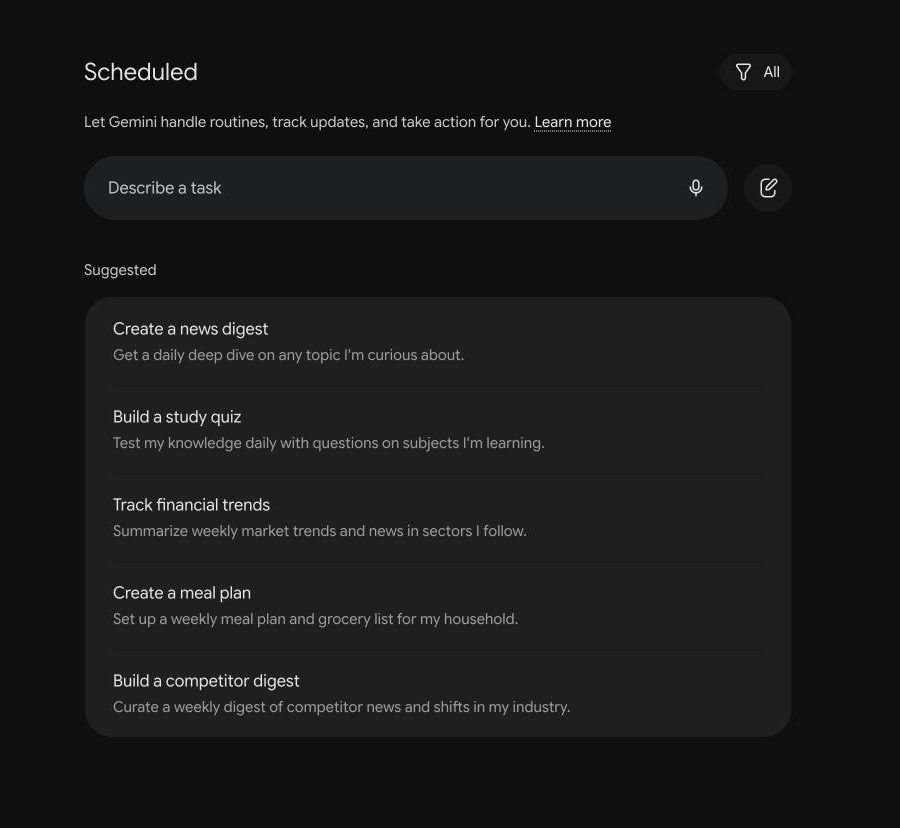
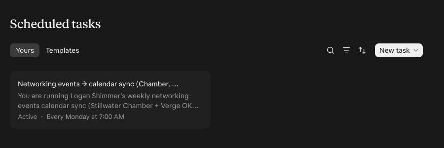

Sidebar → Scheduled. Free gets 3 tasks. Gmail-triggered runs need Plus. A task made inside a Project can’t read its files.

Sidebar → Scheduled. Google AI Pro or Ultra. Gems are becoming skills, and a skill can carry reference files.

Sidebar → Scheduled. All paid plans, runs in the cloud. Made inside a project, it runs with the project’s files.
